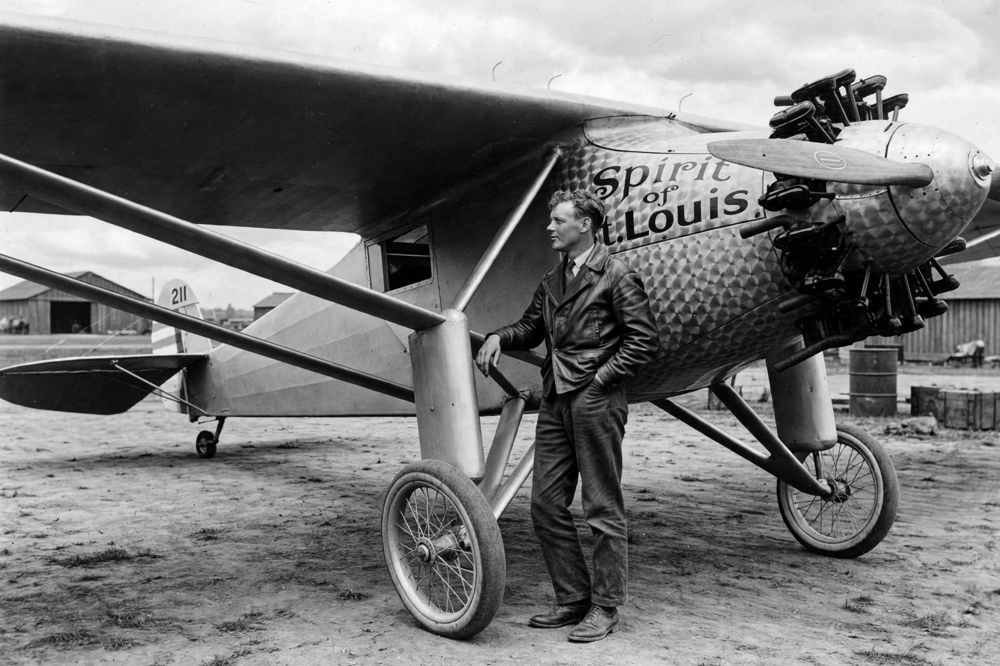

Charles Lindbergh
From Wikipedia, the free encyclopedia

Lindbergh and the Spirit of St. Louis.Charles Augustus Lindbergh (1902–1974) was an American aviator who made the first solo, nonstop transatlantic flight on 20–21 May 1927, flying the Spirit of St. Louis from New York to Paris in 33½ hours and winning the $25,000 Orteig Prize. The flight made him a global celebrity (\'Lucky Lindy\', the \'Lone Eagle\') and transformed public confidence in aviation. His later life was marked by the kidnapping and murder of his infant son (1932) and controversy over his pre-war America First advocacy.
Early career
Born in Detroit and raised in Minnesota, Lindbergh dropped out of engineering to fly, barnstorming and working as an airmail pilot on the St. Louis–Chicago route — surviving two bailouts. Backed by St. Louis businessmen, he commissioned a custom Ryan monoplane and took off from Roosevelt Field on 20 May 1927, carrying no parachute or radio to save weight.
The flight and its impact
Fighting sleep and icing, he landed at Le Bourget at 22:22 Paris time to a crowd of some 150,000. The achievement triggered an aviation boom: US airline passengers multiplied, stocks surged (the \'Lindbergh boom\'), and airmail and airport building expanded. He toured all 48 states promoting aviation and married Anne Morrow in 1929.
Later life
The 1932 \'Crime of the Century\' kidnapping of Charles Jr. led to a media frenzy and the Lindbergh Law. In the late 1930s Lindbergh admired German aviation, accepted a medal from Göring, and led America First opposition to entering the Second World War — damaging his reputation — though he later flew combat missions as a civilian consultant in the Pacific. He spent later years in conservation and died in Hawaii in 1974.